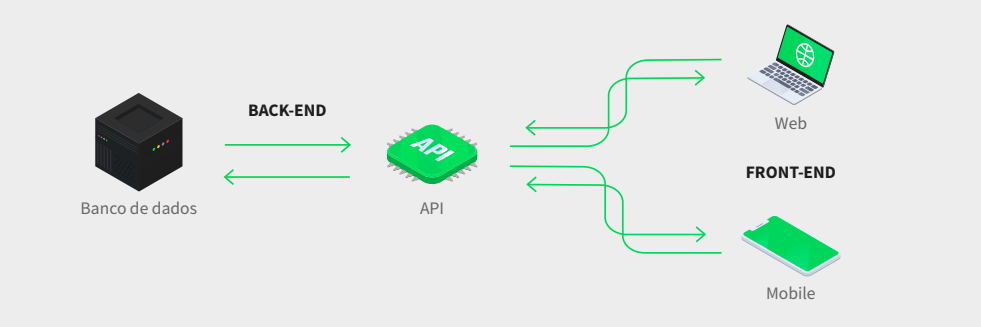

O que é "programação"?
O mundo da programação quase não existe limite, o unico limite é o tempo.
Com a programação conseguimos fazer varias coisas, como: Um simples site,
um banco de dados, até um robô físico ou virtual.
O que faz um programador?
Um programador ou desenvolvedor, faz de tudo em que é especializado, por exemplo, o Youtube, foi feito
por um programador, e até hoje continua sendo desenvolvido
e melhorado a cada dia, tanto na questão de segurança, como na estética.
O trabalho de desenvolvedor é dividido em duas áreas "técnicas".
O desenvolvedor front-end, é a pessoa que cuida da interação com o usuário final, ou seja,
tudo que envolve telas ou funcionalidades do dispositivo.
O desenvolvedor back-end, é a pessoa que tem o objetivo de controlar o banco de dados.

Quanto ganha um programador?
Um programador pode ter um salario muito variado, é bem dificil definir por padrão
quanto um programador ganha, pois a cada mês que passa, o salário de muitos podem aumentar, ou diminuir.
Programadores podem ganhar por projeto feito (FreeLancer), por dia, por semana, por mês ou por ano.